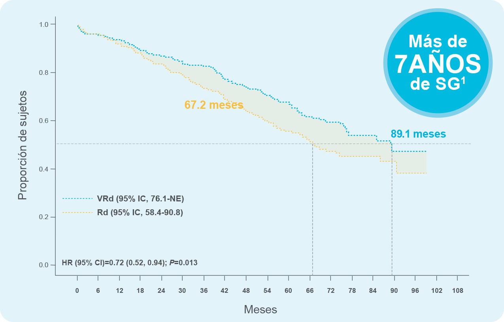

REVLIMID® EN COMBINACIÓN CON BORTEZOMIB Y DEXAMETASONA ESTÁ INDICADO PARA EL TRATAMIENTO DE PACIENTES ADULTOS CON MIELOMA MÚLTIPLE NO TRATADO PREVIAMENTE.
REVLIMID®: SOBREVIDA SIN PRECEDENTES QUE TRANSFORMA EL CURSO DEL MM EN LOS PACIENTES DE NUEVO DIAGNÓSTICO SIN INTENCIÓN INMEDIATA DE TRASPLANTE
La mediana de la SG aumentó casi 2 años con la terapia triple con REVLIMID vs. Rd2

• Mediana del seguimiento para todos los pacientes: 69 meses1. SG: Supervivencia global